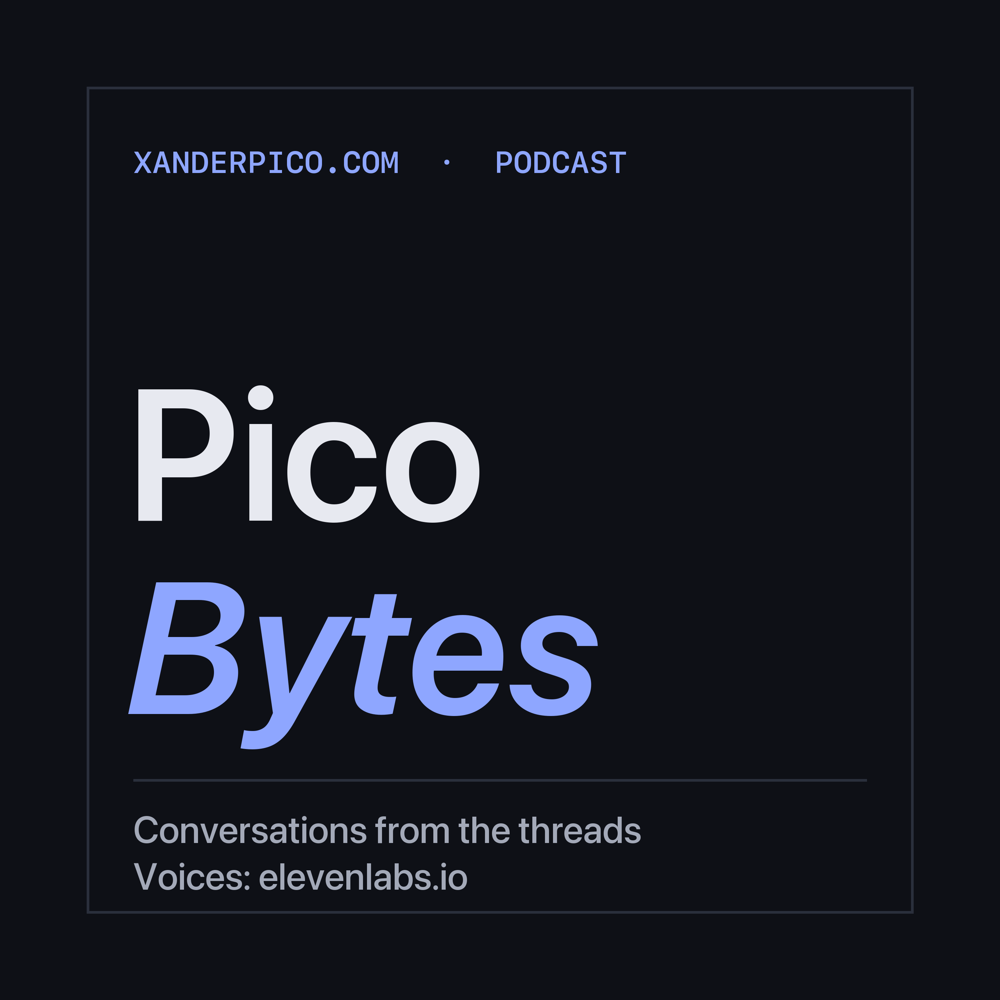

PODCAST
Pico Bytes
Conversations from xanderpico.com.
Pico Bytes is a short conversation podcast from xanderpico.com, Alex Pico's site on experimental science, software and AI. Each episode takes one thread or newsletter from the site and walks through what is published there, sources and all. Scripted AI-generated voices present each episode; its description identifies the voice tools, and the source page carries the research references.
Voices are AI-generated; each episode names its voice tools. Subscribe in any podcast app with the feed address https://xanderpico.com/podcast.xml
Episodes
EPISODE 2 · November 8, 2026 · 4:16
Cognitive tests at scale, for pennies
Jev from TypeSafe AI answers a defined question about text with a probability. What happens when researchers put this unusual tool through cognitive tests designed for people? This short conversation follows the independent work on xanderpico.com: a trait-order result opposite to the first-impression pattern used for comparison, a conjunction judgment that changes with layout, and word-similarity rankings that resemble human ratings while the raw scores do not. The hosts turn those results into practical advice for builders: pin the version and exact question, test wording, order and layout, compare with human ratings where available, and keep inactive inputs separate. The article and linked result write-ups have the full methods, numbers and caveats. Independent work; not affiliated with or endorsed by TypeSafe. This episode uses scripted AI-generated hosts and synthetic voices.
AI-generated voices using OpenMOSS-TTSD; reference voices from Qwen3-TTS VoiceDesign and Kokoro.
Transcript · Read the article · Builder's notes · Bias test results · Word-pair results · Thread: Cognitive tests at scale, for pennies · MP3 (5.1 MB)
EPISODE 1 · October 26, 2026 · 9:22
Frontier labs as national laboratories, the October newsletter
Frontier AI labs already get lab-style treatment from the US government, but through one-off levers rather than the contract that makes national labs open, graded and replaceable. This episode walks through the October issue of the Frontier Labs newsletter on xanderpico.com: the six levers in use, estimates for nine paths to 2030, the strongest objection, and what to watch next. Every claim comes from the published newsletter, which lists all 37 sources. The hosts, George and Jessica, are AI voices.
Voices generated with elevenlabs.io.
Transcript · Read the newsletter · Thread: Frontier labs as national laboratories · MP3 (9.0 MB)